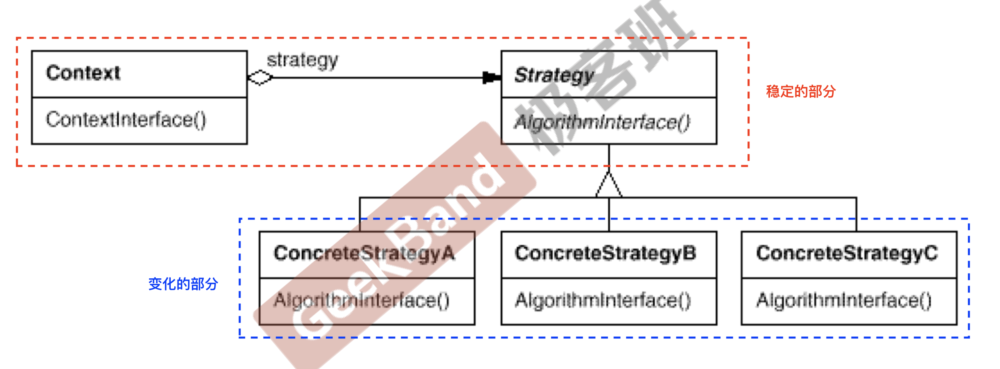

<!DOCTYPE html>
<html lang="en" >


<head>
  <meta charset="UTF-8">
  <link rel="apple-touch-icon" sizes="76x76" href="/img/favicon.png">
  <link rel="icon" type="image/png" href="/img/favicon.png">
  <meta name="viewport"
        content="width=device-width, initial-scale=1.0, maximum-scale=1.0, user-scalable=no, shrink-to-fit=no">
  <meta http-equiv="x-ua-compatible" content="ie=edge">
  
  <meta name="theme-color" content="black">
  <meta name="description" content="">
  <meta name="author" content="Chenlu Miao">
  <meta name="keywords" content="">
  <title>Strategy Method - Explorer</title>

  <link  rel="stylesheet" href="https://cdn.staticfile.org/twitter-bootstrap/4.4.1/css/bootstrap.min.css" />


  <link  rel="stylesheet" href="https://cdn.staticfile.org/github-markdown-css/4.0.0/github-markdown.min.css" />
  <link  rel="stylesheet" href="/lib/hint/hint.min.css" />

  
    
    <link  rel="stylesheet" href="https://cdn.staticfile.org/highlight.js/10.0.0/styles/atom-one-dark.min.css" />
  

  
    <link  rel="stylesheet" href="https://cdn.staticfile.org/gitalk/1.6.2/gitalk.css" />
  


<!-- 主题依赖的图标库，不要自行修改 -->

<link rel="stylesheet" href="//at.alicdn.com/t/font_1749284_6peoq002giu.css">


<link rel="stylesheet" href="//at.alicdn.com/t/font_1736178_pjno9b9zyxs.css">


<link  rel="stylesheet" href="/css/main.css" />

<!-- 自定义样式保持在最底部 -->


  <script  src="/js/utils.js" ></script>
  <script  src="/js/color-schema.js" ></script>
<meta name="generator" content="Hexo 4.2.1"></head>


<body>
  <header style="height: 70vh;">
    <nav id="navbar" class="navbar fixed-top  navbar-expand-lg navbar-dark scrolling-navbar">
  <div class="container">
    <a class="navbar-brand"
       href="/">&nbsp;<strong>Explorer</strong>&nbsp;</a>

    <button id="navbar-toggler-btn" class="navbar-toggler" type="button" data-toggle="collapse"
            data-target="#navbarSupportedContent"
            aria-controls="navbarSupportedContent" aria-expanded="false" aria-label="Toggle navigation">
      <div class="animated-icon"><span></span><span></span><span></span></div>
    </button>

    <!-- Collapsible content -->
    <div class="collapse navbar-collapse" id="navbarSupportedContent">
      <ul class="navbar-nav ml-auto text-center">
        
          
          
          
          
            <li class="nav-item">
              <a class="nav-link" href="/">
                <i class="iconfont icon-home-fill"></i>
                Home
              </a>
            </li>
          
        
          
          
          
          
            <li class="nav-item">
              <a class="nav-link" href="/archives/">
                <i class="iconfont icon-archive-fill"></i>
                Archives
              </a>
            </li>
          
        
          
          
          
          
            <li class="nav-item">
              <a class="nav-link" href="/categories/">
                <i class="iconfont icon-category-fill"></i>
                Categories
              </a>
            </li>
          
        
          
          
          
          
            <li class="nav-item">
              <a class="nav-link" href="/tags/">
                <i class="iconfont icon-tags-fill"></i>
                Tags
              </a>
            </li>
          
        
          
          
          
          
            <li class="nav-item">
              <a class="nav-link" href="/about/">
                <i class="iconfont icon-user-fill"></i>
                About
              </a>
            </li>
          
        
        
          <li class="nav-item" id="search-btn">
            <a class="nav-link" data-toggle="modal" data-target="#modalSearch">&nbsp;<i
                class="iconfont icon-search"></i>&nbsp;</a>
          </li>
        
        
      </ul>
    </div>
  </div>
</nav>

    <div class="banner intro-2" id="background" parallax=true
         style="background: url('/img/default.png') no-repeat center center;
           background-size: cover;">
      <div class="full-bg-img">
        <div class="mask flex-center" style="background-color: rgba(0, 0, 0, 0.3)">
          <div class="container page-header text-center fade-in-up">
            <span class="h2" id="subtitle">
              
            </span>

            
              
  <div class="mt-3 post-meta">
    <i class="iconfont icon-date-fill" aria-hidden="true"></i>
    <time datetime="2020-08-05 07:53" pubdate>
      August 5, 2020 am
    </time>
  </div>


<div class="mt-1">
  
    
    <span class="post-meta mr-2">
      <i class="iconfont icon-chart"></i>
      819 字
    </span>
  

  
    
    <span class="post-meta mr-2">
      <i class="iconfont icon-clock-fill"></i>
      
      
      10
       分钟
    </span>
  

  
  
    
      <!-- 不蒜子统计文章PV -->
      <span id="busuanzi_container_page_pv" style="display: none">
        <i class="iconfont icon-eye" aria-hidden="true"></i>
        <span id="busuanzi_value_page_pv"></span> 次
      </span>
    
  
</div>

            
          </div>

          
        </div>
      </div>
    </div>
  </header>

  <main>
    
      

<div class="container-fluid">
  <div class="row">
    <div class="d-none d-lg-block col-lg-2"></div>
    <div class="col-lg-8 nopadding-md">
      <div class="container nopadding-md" id="board-ctn">
        <div class="py-5" id="board">
          <article class="post-content mx-auto" id="post">
            <!-- SEO header -->
            <h1 style="display: none">Strategy Method</h1>
            
            <div class="markdown-body" id="post-body">
              <h2 id="动机"><a href="#动机" class="headerlink" title="动机"></a>动机</h2><p>在软件构建过程中，某些对象使用的算法可能多种多样，经常改变，如果将这些算法都编码到对象中，将会使对象变得异常复杂； 而且有时候支持不使用的算法也是一个性能负担</p>
<p>如何在运行时根据需要透明地更改对象的算法？将算法与对象本身解耦，从而避免上述问题？</p>
<h2 id="Strategy-Method定义"><a href="#Strategy-Method定义" class="headerlink" title="Strategy Method定义"></a>Strategy Method定义</h2><p>定义一系列算法，把它们一个个封装起来，并且使它们可互 相替换（变化）。该模式使得算法可独立于使用它的客户程 序(稳定)而变化（扩展，子类化）。</p>
<h2 id="代码示例"><a href="#代码示例" class="headerlink" title="代码示例"></a>代码示例</h2><p>考虑一下计算税的例子</p>
<ul>
<li>第一种实现方式</li>
</ul>
<div class="hljs"><pre><code class="hljs cpp"><span class="hljs-keyword">enum</span> TaxBase &#123;
    CN_Tax,
    US_Tax,
    DE_Tax
&#125;;

<span class="hljs-class"><span class="hljs-keyword">class</span> <span class="hljs-title">SalesOrder</span> &#123;</span>
    TaxBase tax;
<span class="hljs-keyword">public</span>:
    <span class="hljs-function"><span class="hljs-keyword">double</span> <span class="hljs-title">CalculateTax</span><span class="hljs-params">()</span> </span>&#123;
        <span class="hljs-comment">//...</span>
        
        <span class="hljs-keyword">if</span>(tax == CN_Tax) &#123;
            <span class="hljs-comment">//CN*****</span>
        &#125; <span class="hljs-keyword">else</span> <span class="hljs-keyword">if</span>(tax == US_Tax) &#123;
            <span class="hljs-comment">//US*****</span>
        &#125; <span class="hljs-keyword">else</span> <span class="hljs-keyword">if</span>(tax == DE_Tax) &#123;
            <span class="hljs-comment">//DE*****</span>
        &#125;
        <span class="hljs-comment">//***</span>
    &#125;
&#125;</code></pre></div>
<p>有些时候，静态地去观察是看不出来的，加入时间轴，考虑到未来的动态变化，问题就会暴露出来。考虑上述例子，如果要加入一个国家，比如法国，那么我们不仅要在<code>TaxBase</code>中中增加一个<code>FR_Tax</code>, 还需要在<code>SalesOrder</code>中增加判断语句。这样的更改违背了开闭原则： 对扩展开放，对修改封闭 (避免去修改源代码</p>
<div class="hljs"><pre><code class="hljs cpp"><span class="hljs-keyword">enum</span> TaxBase &#123;
    CN_Tax,
    US_Tax,
    DE_Tax,
    <span class="hljs-comment">/***加入France***/</span>
    FR_Tax,
&#125;;

<span class="hljs-class"><span class="hljs-keyword">class</span> <span class="hljs-title">SalesOrder</span> &#123;</span>
    TaxBase tax;
<span class="hljs-keyword">public</span>:
    <span class="hljs-function"><span class="hljs-keyword">double</span> <span class="hljs-title">CalculateTax</span><span class="hljs-params">()</span> </span>&#123;
        <span class="hljs-comment">//...</span>
        
        <span class="hljs-keyword">if</span>(tax == CN_Tax) &#123;
            <span class="hljs-comment">//CN*****</span>
        &#125; <span class="hljs-keyword">else</span> <span class="hljs-keyword">if</span>(tax == US_Tax) &#123;
            <span class="hljs-comment">//US*****</span>
        &#125; <span class="hljs-keyword">else</span> <span class="hljs-keyword">if</span>(tax == DE_Tax) &#123;
            <span class="hljs-comment">//DE*****</span>
        &#125;
        <span class="hljs-comment">/***加入France***/</span>
        <span class="hljs-keyword">else</span> <span class="hljs-keyword">if</span>(tax == FR_Tax) &#123;
          
        &#125;
        <span class="hljs-comment">//***</span>
    &#125;
&#125;</code></pre></div>
<ul>
<li>考虑另一种实现方式</li>
</ul>
<div class="hljs"><pre><code class="hljs cpp"><span class="hljs-class"><span class="hljs-keyword">class</span> <span class="hljs-title">TaxStrategy</span> &#123;</span>
<span class="hljs-keyword">public</span>:
    <span class="hljs-function"><span class="hljs-keyword">virtual</span> <span class="hljs-keyword">double</span> <span class="hljs-title">Calculate</span><span class="hljs-params">(<span class="hljs-keyword">const</span> Context&amp; context)</span> </span>= <span class="hljs-number">0</span>;
    <span class="hljs-keyword">virtual</span> ~TaxStrategy() &#123;&#125;
&#125;;

<span class="hljs-class"><span class="hljs-keyword">class</span> <span class="hljs-title">CNTax</span>:</span> <span class="hljs-keyword">public</span> TaxStrategy &#123;
<span class="hljs-keyword">public</span>:
    <span class="hljs-function"><span class="hljs-keyword">virtual</span> <span class="hljs-keyword">double</span> <span class="hljs-title">Calculate</span><span class="hljs-params">(<span class="hljs-keyword">const</span> Context&amp; context)</span> </span>&#123;
        <span class="hljs-comment">//...</span>
    &#125;
&#125;;

<span class="hljs-class"><span class="hljs-keyword">class</span> <span class="hljs-title">USTax</span>:</span> <span class="hljs-keyword">public</span> TaxStrategy &#123;
    <span class="hljs-function"><span class="hljs-keyword">virtual</span> <span class="hljs-keyword">double</span> <span class="hljs-title">Calculate</span><span class="hljs-params">(<span class="hljs-keyword">const</span> Context&amp; context)</span> </span>&#123;
        <span class="hljs-comment">//...</span>
    &#125;
&#125;
<span class="hljs-class"><span class="hljs-keyword">class</span> <span class="hljs-title">DETax</span>:</span> <span class="hljs-keyword">public</span> TaxStrategy &#123;
<span class="hljs-keyword">public</span>:
    <span class="hljs-function"><span class="hljs-keyword">virtual</span> <span class="hljs-keyword">double</span> <span class="hljs-title">Calculate</span><span class="hljs-params">(<span class="hljs-keyword">const</span> Context&amp; context)</span> </span>&#123;
        <span class="hljs-comment">//...</span>
    &#125;
&#125;</code></pre></div>
<div class="hljs"><pre><code class="hljs cpp"><span class="hljs-class"><span class="hljs-keyword">class</span> <span class="hljs-title">SalesOrder</span> &#123;</span>
<span class="hljs-keyword">private</span>:
    TaxStrategy* strategy;
<span class="hljs-keyword">public</span>:
    SalesOrder(StrategyFactory* strategyFactory) &#123;
        <span class="hljs-keyword">this</span>-&gt;strategy = strategyFactory-&gt;NewStrategy();
    &#125;
    
    ~SalesOrder() &#123;
        <span class="hljs-keyword">delete</span> <span class="hljs-keyword">this</span>-&gt;strategy;
    &#125;
    
    <span class="hljs-function"><span class="hljs-keyword">public</span> <span class="hljs-keyword">double</span> <span class="hljs-title">CalculateTax</span><span class="hljs-params">()</span> </span>&#123;
        <span class="hljs-comment">//...</span>
        <span class="hljs-function">Context <span class="hljs-title">context</span><span class="hljs-params">()</span></span>;
        
        <span class="hljs-keyword">double</span> val = 
            	srtategy-&gt;Calculate(context);<span class="hljs-comment">//多态调用</span>
    &#125;
&#125;</code></pre></div>
<p>如果要增加法国，只需增加一个<code>FRTax</code>类</p>
<div class="hljs"><pre><code class="hljs cpp"><span class="hljs-class"><span class="hljs-keyword">class</span> <span class="hljs-title">FRTax</span>:</span> <span class="hljs-keyword">public</span> TaxStrategy &#123;
<span class="hljs-keyword">public</span>:
    <span class="hljs-function"><span class="hljs-keyword">virtual</span> doubel <span class="hljs-title">Calculate</span><span class="hljs-params">(<span class="hljs-keyword">const</span> Context&amp; context)</span> </span>&#123;
        <span class="hljs-comment">//...</span>
    &#125;
&#125;</code></pre></div>
<p>这是一种扩展的做法，在这里只需要增加一个FRTax类，不需要更改SalesOrder。</p>
<p>复用性一般是指二进制层面下的复用性，如果使用第一种方法，那么整个系统需要重新编译，重新测试。虽然修改后保留了一部分原来的代码，但是这个并不是复用。而策略方法不需要重新编译之前编译好的文件，只需要重新编译FRTax这个文件</p>
<h2 id="结构"><a href="#结构" class="headerlink" title="结构"></a>结构</h2><p> </p>
<h2 id="总结"><a href="#总结" class="headerlink" title="总结"></a>总结</h2><ul>
<li><p>Strategy及其子类为组件提供了一系列可重用的算法，从而可以使 得类型在运行时方便地根据需要在各个算法之间进行切换。</p>
</li>
<li><p>Strategy模式提供了用条件判断语句以外的另一种选择，消除条件 判断语句，就是在解耦合。含有许多条件判断语句的代码通常都需 要Strategy模式。</p>
</li>
<li><p>如果Strategy对象没有实例变量，那么各个上下文可以共享同一个 Strategy对象，从而节省对象开销</p>
</li>
</ul>

            </div>
            <hr>
            <div>
              <div class="post-metas mb-3">
                
                  <div class="post-meta mr-3">
                    <i class="iconfont icon-category"></i>
                    
                      <a class="hover-with-bg" href="/categories/Design-Patterns/">Design Patterns</a>
                    
                  </div>
                
                
                  <div class="post-meta">
                    <i class="iconfont icon-tags"></i>
                    
                      <a class="hover-with-bg" href="/tags/Design-Patterns/">Design Patterns</a>
                    
                  </div>
                
              </div>
              
                <p class="note note-warning">本博客所有文章除特别声明外，均采用 <a href="https://creativecommons.org/licenses/by-sa/4.0/deed.zh" target="_blank" rel="nofollow noopener noopener">CC BY-SA 4.0 协议</a> ，转载请注明出处！</p>
              
              
                <div class="post-prevnext row">
                  <article class="post-prev col-6">
                    
                    
                      <a href="/2020/08/05/DesignPatterns/TemplateMethod/">
                        <i class="iconfont icon-arrowleft"></i>
                        <span class="hidden-mobile">Template Method</span>
                        <span class="visible-mobile">Previous</span>
                      </a>
                    
                  </article>
                  <article class="post-next col-6">
                    
                    
                      <a href="/2019/12/08/ComputerArchitecture/Storage/">
                        <span class="hidden-mobile">CA - Storage</span>
                        <span class="visible-mobile">Next</span>
                        <i class="iconfont icon-arrowright"></i>
                      </a>
                    
                  </article>
                </div>
              
            </div>

            
          </article>
        </div>
      </div>
    </div>
    
      <div class="d-none d-lg-block col-lg-2 toc-container" id="toc-ctn">
        <div id="toc">
  <p class="toc-header"><i class="iconfont icon-list"></i>&nbsp;TOC</p>
  <div id="tocbot"></div>
</div>

      </div>
    
  </div>
</div>

<!-- Custom -->


    
  </main>

  
    <a id="scroll-top-button" href="#" role="button">
      <i class="iconfont icon-arrowup" aria-hidden="true"></i>
    </a>
  

  
    <div class="modal fade" id="modalSearch" tabindex="-1" role="dialog" aria-labelledby="ModalLabel"
     aria-hidden="true">
  <div class="modal-dialog modal-dialog-scrollable modal-lg" role="document">
    <div class="modal-content">
      <div class="modal-header text-center">
        <h4 class="modal-title w-100 font-weight-bold">Search</h4>
        <button type="button" id="local-search-close" class="close" data-dismiss="modal" aria-label="Close">
          <span aria-hidden="true">&times;</span>
        </button>
      </div>
      <div class="modal-body mx-3">
        <div class="md-form mb-5">
          <input type="text" id="local-search-input" class="form-control validate">
          <label data-error="x" data-success="v"
                 for="local-search-input">keyword</label>
        </div>
        <div class="list-group" id="local-search-result"></div>
      </div>
    </div>
  </div>
</div>
  

  

  

  <footer class="mt-5">
  <div class="text-center py-3">
    <div>
      <a href="https://hexo.io" target="_blank" rel="nofollow noopener"><span>Hexo</span></a>
      <i class="iconfont icon-love"></i>
      <a href="https://github.com/fluid-dev/hexo-theme-fluid" target="_blank" rel="nofollow noopener">
        <span>Fluid</span></a>
    </div>
    

    

    
  </div>
</footer>

<!-- SCRIPTS -->
<script  src="https://cdn.staticfile.org/jquery/3.4.1/jquery.min.js" ></script>
<script  src="https://cdn.staticfile.org/twitter-bootstrap/4.4.1/js/bootstrap.min.js" ></script>
<script  src="/js/debouncer.js" ></script>
<script  src="/js/main.js" ></script>

<!-- Plugins -->


  
    <script  src="/js/lazyload.js" ></script>
  


  <script defer src="https://cdn.staticfile.org/clipboard.js/2.0.6/clipboard.min.js" ></script>
  <script  src="/js/clipboard-use.js" ></script>


  <script defer src="https://busuanzi.ibruce.info/busuanzi/2.3/busuanzi.pure.mini.js" ></script>


  <script  src="https://cdn.staticfile.org/tocbot/4.11.1/tocbot.min.js" ></script>
  <script>
    $(document).ready(function () {
      var boardCtn = $('#board-ctn');
      var boardTop = boardCtn.offset().top;

      tocbot.init({
        tocSelector: '#tocbot',
        contentSelector: '#post-body',
        headingSelector: 'h1,h2,h3,h4,h5,h6',
        linkClass: 'tocbot-link',
        activeLinkClass: 'tocbot-active-link',
        listClass: 'tocbot-list',
        isCollapsedClass: 'tocbot-is-collapsed',
        collapsibleClass: 'tocbot-is-collapsible',
        collapseDepth: 0,
        scrollSmooth: true,
        headingsOffset: -boardTop
      });
      if ($('.toc-list-item').length > 0) {
        $('#toc').css('visibility', 'visible');
      }
    });
  </script>


  <script  src="https://cdn.staticfile.org/typed.js/2.0.11/typed.min.js" ></script>
  <script>
    var typed = new Typed('#subtitle', {
      strings: [
        '  ',
        "Strategy Method&nbsp;",
      ],
      cursorChar: "_",
      typeSpeed: 70,
      loop: false,
    });
    typed.stop();
    $(document).ready(function () {
      $(".typed-cursor").addClass("h2");
      typed.start();
    });
  </script>


  <script  src="https://cdn.staticfile.org/anchor-js/4.2.2/anchor.min.js" ></script>
  <script>
    anchors.options = {
      placement: "right",
      visible: "hover",
      
    };
    var el = "h1,h2,h3,h4,h5,h6".split(",");
    var res = [];
    for (item of el) {
      res.push(".markdown-body > " + item)
    }
    anchors.add(res.join(", "))
  </script>


  <script  src="/js/local-search.js" ></script>
  <script>
    var path = "/local-search.xml";
    var inputArea = document.querySelector("#local-search-input");
    inputArea.onclick = function () {
      searchFunc(path, 'local-search-input', 'local-search-result');
      this.onclick = null
    }
  </script>


  <script  src="https://cdn.staticfile.org/fancybox/3.5.7/jquery.fancybox.min.js" ></script>
  <link  rel="stylesheet" href="https://cdn.staticfile.org/fancybox/3.5.7/jquery.fancybox.min.css" />

  <script>
    $('#post img:not(.no-zoom img, img[no-zoom]), img[zoom]').each(
      function () {
        var element = document.createElement('a');
        $(element).attr('data-fancybox', 'images');
        $(element).attr('href', $(this).attr('src'));
        $(this).wrap(element);
      }
    );
  </script>


  

  
    <!-- MathJax -->
    <script>
      MathJax = {
        tex: {
          inlineMath: [['$', '$'], ['\\(', '\\)']]
        },
        options: {
          renderActions: {
            findScript: [10, doc => {
              document.querySelectorAll('script[type^="math/tex"]').forEach(node => {
                const display = !!node.type.match(/; *mode=display/);
                const math = new doc.options.MathItem(node.textContent, doc.inputJax[0], display);
                const text = document.createTextNode('');
                node.parentNode.replaceChild(text, node);
                math.start = { node: text, delim: '', n: 0 };
                math.end = { node: text, delim: '', n: 0 };
                doc.math.push(math);
              });
            }, '', false],
            insertedScript: [200, () => {
              document.querySelectorAll('mjx-container').forEach(node => {
                let target = node.parentNode;
                if (target.nodeName.toLowerCase() === 'li') {
                  target.parentNode.classList.add('has-jax');
                }
              });
            }, '', false]
          }
        }
      };
    </script>

    <script async src="https://cdn.staticfile.org/mathjax/3.0.5/es5/tex-svg.js" ></script>

  


  <script  src="https://cdn.staticfile.org/mermaid/8.5.0/mermaid.min.js" ></script>
  <script>
    if (window.mermaid) {
      mermaid.initialize({"theme":"default"});
    }
  </script>


</body>
</html>
